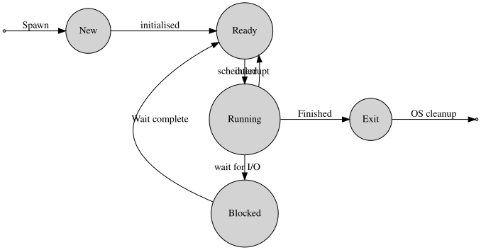
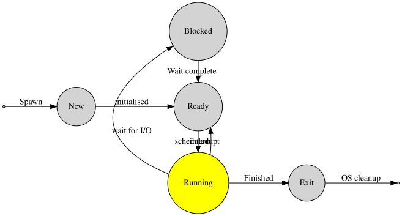
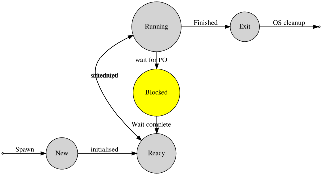
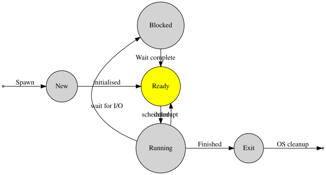
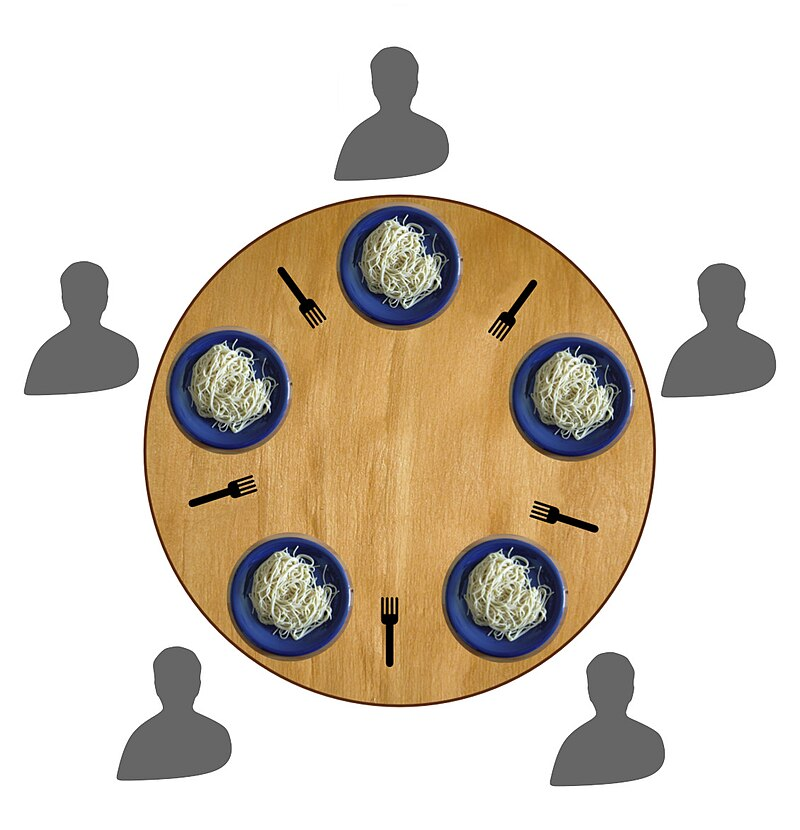

Process is running.

Makes a syscall, requesting I/O.
OS moves the process to blocked.

Process remains blocked until I/O request has been completed.
When the I/O request is done, OS moves the process to ready.

OS Will move the process to running when it is scheduled.
Deciding what to do next.
A good scheduler should:
not give any process too much CPU, but not give any process too little, either (starvation).
Give compute-heavy processes longer, larger slices of CPU time, but give interactive processes small slices of CPU time very often.
Ensure real-time (safety-critical) processes run immediately.
Ensure optimum use of hardware, everything should be busy, nothing should be waiting.
Optimise for different types of hardware, e.g., mice and printers are slow, network and disk is (comparatively) fast.
Provide predictable behaviour, and
degrade gracefully under excessive load.
Run fast, so as to maximise time spent running user-land applications and avoid thrashing.
prevent deadlocks,
a group of processes all waiting for one of their number to do something.
Process protection:
insuring that processes cannot interfere with one another.
What happens?
\(P_1\) is scheduled.
\(P_1\) is given disk \(A\),
Now \(P_2\) is scheduled.
It is given access to disk \(B\).
\(P_2\) is still running.
It requests access to disk \(A\).
Request is denied since \(P_1\) has disk \(A\).
\(P_2\) blocks, waiting for disk \(A\).
\(P_1\) is scheduled.
It requests access to disk \(B\).
The request is denied since \(P_2\) has disk \(B\) already.
\(P_1\) blocks waiting for disk \(B\).
Now both \(P_1\) and \(P_2\) are blocked.
Only \(P_1\) can unblock \(P_2\), and only \(P_2\) can unblock \(P_1\).
We have a deadlock.
A group of processes, \(D = \{P_1,\ldots,P_k\}\) is deadlocked if
A group of processes is deadlockd if:
Mutual exclusion:
exclusive access to a resource is required.j
Hold and wait:
a process holds onto a resource while waiting for another.
No pre-emption:
once a process has a resource, it cannot be taken away.
A deadlock is only possible if all three conditions are met.
How are the three conditions met in the disk writing example we considered earlier?
If we break at least one Coffman condition, deadlock is impossible.
Seems possible, but maybe harder than it looks…
Hold and wait
process holds onto a resource while waiting for another.
Solution:
each time a process blocks on a resource, they must drop all other resources.
Drawback
process has to request all resources again.
It may never be possible to grab all resources at once.
Why not block until all resources become available?
an even stricter approach: start the process only when resources are available.
Process releases resources when it exits.
Mutual exclusion:
a process requires exclusive access to a resource.
Solution:
allow multiple devices to access the same resource at the same time.
Drawback often impossible.
E.g., printer, mechanical hard disk drive with one read/write head.
Alternative solution: virtual resources.
No Pre-emption
once a process has a resource, it cannot be taken away.
Solution:
take resources away as needed.
Drawback
process expects the resource to be in the same state as when it was taken away.
We need to take care to save and restore the state or resources,
so that the process can resume working on them as before.
sometimes easy, as we will see with memory
sometimes difficult or impossible, e.g., with a printer.
12 philosophers sit around a table,
They want to share a bowl of noodles, eaten with chopsticks.
Each philosopher has one chopstick to the left and one chopstick to the right of their plate:
a philosopher needs two chopsticks to eat.
There are not enough chopsticks to go around.

The Coffman conditions all hold!
The disk writing deadlock was an example of circular wait.
Circular wait
each process in a circle is waiting for a resource that the next process has.
Solution
Put an order on resources, e.g., \(\underbrace{M_{1}<\cdots<M_{k}}_{\text{memory}}<\underbrace{D_{1}<\ldots<D_{\ell}}_{\text{disks}}<\underbrace{P_{1}<\cdots<P_{m}}_{\text{printers}}\).
A process can only access resources greater than the ones it already has.
Suppose \(P_1\) has \(D_1\) and wants \(D_2\).
It requests and gets access to $D_1 < \(D_2\).
It is impossible, if \(P_2\) has \(D_2\) for it to get \(D_1\), since \(D_1 < D_2\).
Circular dependencies are no longer possible.
Same problems as with preventing hold-and-wait.
Don’t let a situation arise where deadlock is possible.
I.e., a request is refused if granting it could cause deadlock now or later.
This is hard to do, since it’s impossible to predict the future.
Split into 3 teams
Team A: Dijkstra’s Banker Algorithm
What is it? What are the conditions needed for resources to be allocated? What are its limitations?
Team B: deadlock detection
What is a request resource allocation graph? How do they prevent deadlock? E.g. circular wait.
Team C virtualisation
What is resource virtualisation? Are there any drawbacks? Describe priority inversion.
Process protection
Inter-process communication